<section class="section-wrapper">
  <div *ngFor="let encounter of encounters">
    <h1>Encounter with {{encounter.name}}</h1>
    <div class="selected">
      
      <div class="toolbar left">
        <span [ngClass]="{'complete': isDetected, 'incomplete': isNotDetected, 'processing': isProcessing}"></span>
        <span [ngClass]="{'complete': isIdentified, 'incomplete': isNotIdentified, 'processing': isProcessing}"></span>
      </div>
      <div class="toolbar right">
        
        
        
      </div>
    </div>
    <div  class="gallery">
      <div class="thumbnail" *ngFor="let mediaAsset of encounter.mediaAssets; let i = index" (click)="selectImage(i)" [ngClass]="{'focusImage':encounter.mediaAssets[i].isSelected}">
        
        <div class="canvas">
          <div class="annotation"
          [style.height]="getHeight(i)"
          [style.width]="getWidth(i)"
          [style.left]="getLeft(i)"
          [style.top]="getTop(i)"
          >
          </div>
          <div class="secondary-annotation" *ngFor="let secondaryAnnotation of encounter.mediaAssets[i].secondaryAnnotations; let j = index"
          [style.height]="getSecondaryHeight(i, j)"
          [style.width]="getSecondaryWidth(i, j)"
          [style.left]="getSecondaryLeft(i, j)"
          [style.top]="getSecondaryTop(i, j)"
          >
          </div>
        </div>
      </div>
    </div>
  </div>
</section>
